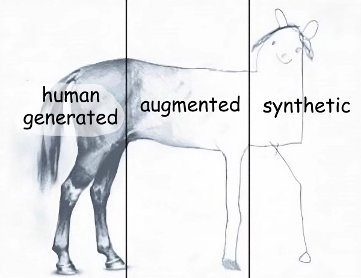

Why you should not
fine-tune on synthetic data
MLCon Berlin 2024 | Roman Grebennikov
whoami
🔎
- PhD in CS, quant trading, credit scoring
- Findify: e-commerce search, personalization
- Delivery Hero: food search, LLMs
- Opensource: Metarank, lightgbm4j, Nixiesearch
Agenda
- Fine-tuning with no training data?
- Domain adaptation in search
- Teaching your model to 说 إنجليزي
Nixiesearch
A stateless search search engine
- Runs over S3 block storage
- Domain adaptation: fine-tunes to your data

Industry goes stateless
- Uber: Lucene: Uber’s Search Platform Version Upgrade [1]
- Doordash: Introducing DoorDash’s in-house search engine [2]
- Amazon: E-Commerce search at scale on Apache Lucene [3]

[1]: https://www.uber.com/en-NL/blog/lucene-version-upgrade/ [2]: https://careers.doordash.com/blog/introducing-doordashs-in-house-search-engine/ [3]: https://www.youtube.com/watch?v=EkkzSLstSAE
Domain adaptation
Different search engines, same embedding, same bad search results